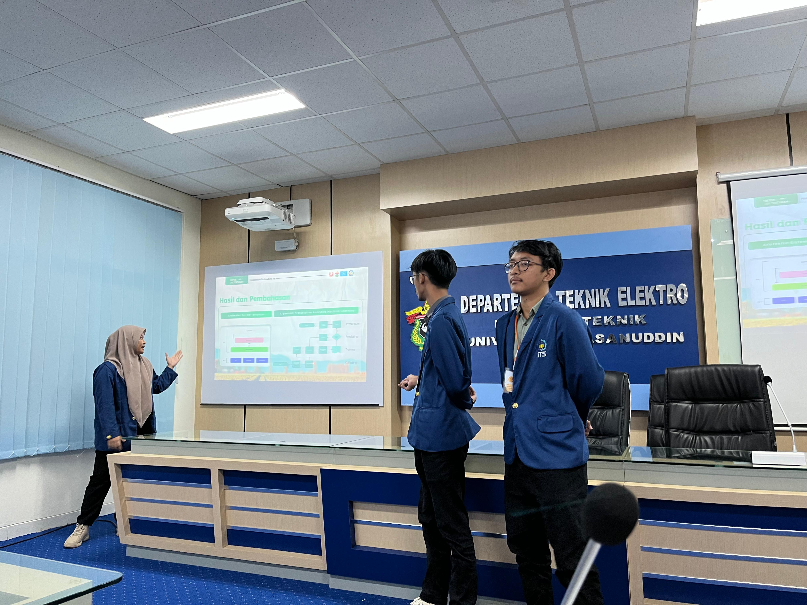
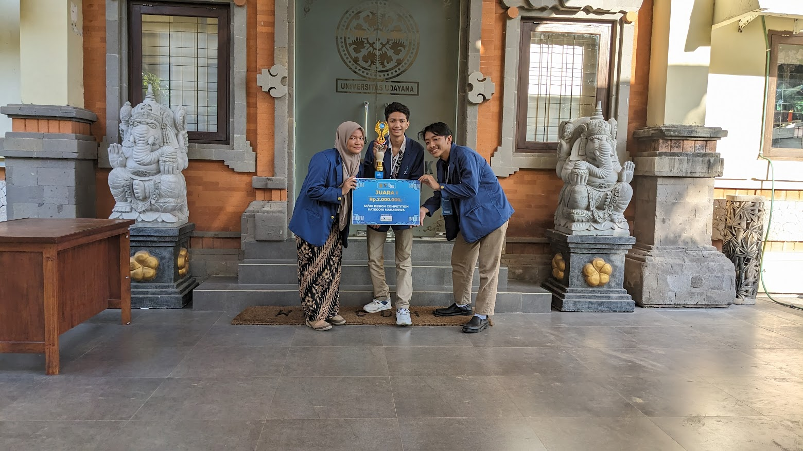
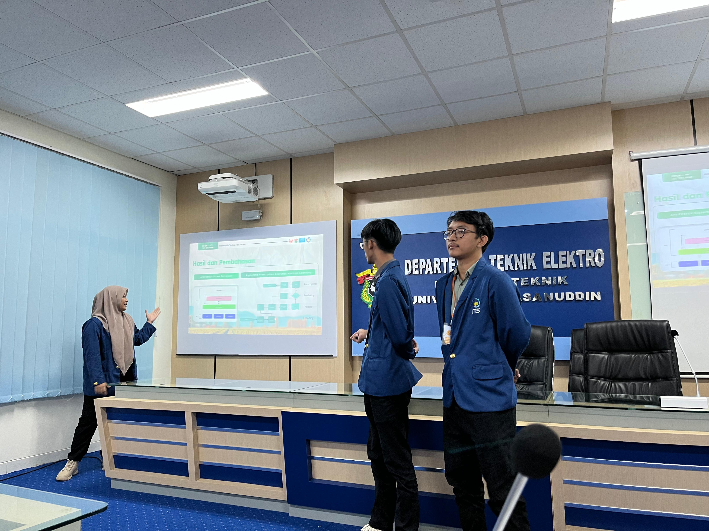
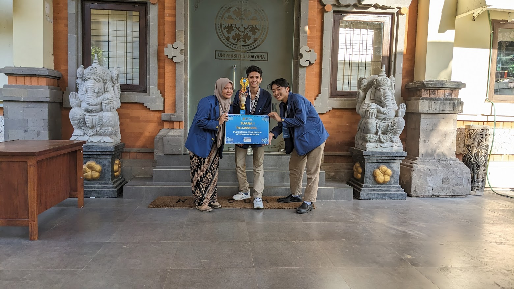

📖 About Me

Hello! I’m Rezky. I am a third-year bachelor student from Sepuluh Nopember Institute of Technology, Surabaya, Indonesia, majoring in Computer Engineering.
I am a junior researcher with a broad interest in Human-Computer Interaction field along with Computational Social Science and Human-Centered Design. The exploration of human-centered computing, accessibility, wellbeing, and societal impact. Particularly, I’m
interested in designing inclusive, user-friendly technologies and assistive applications by integrating HCI and UX
research.

 


